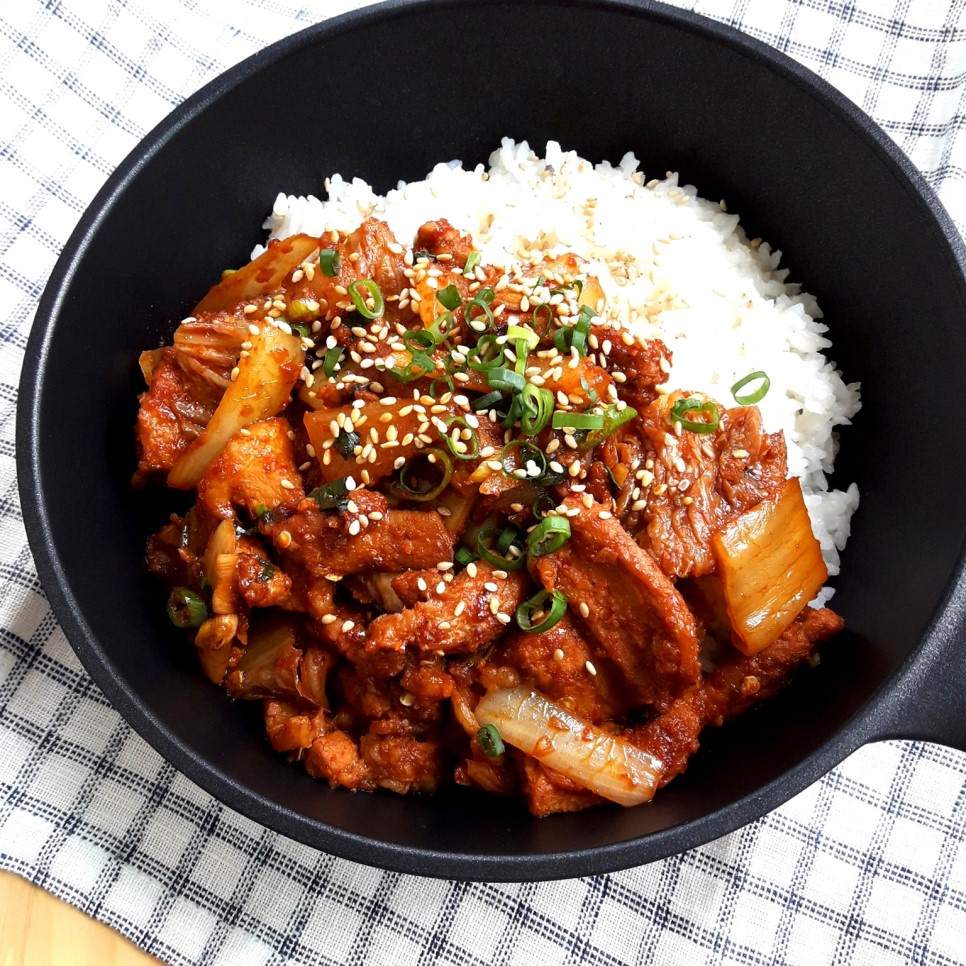

Jeyuk-Deopbap 제육덮밥

Description
Jeyuk-Deopbap dish is a spicy mixture of pork and vegetables that we will serve over rice. This recipe may be too spicy for some, so feel free to adjust some of the seasonings to your own taste.
Here the word Deopbap means "over rice" or literally to cover rice. It is not a fried rice dish, but the seasoning of the meat and vegetables will blend well with plain rice to make a flavorfull dish.
You can use a variety of different cuts of pork for this dish. I will be using thinly sliced pork from the shoulder referred to apdarisal (앞다리살). Feel free to use any cut of pork. You can thinly slice or cube it.
Note that Koreans often use a large spoon to measure things instead of a tablespoon measuring spoon. You may want to slightly reduce the amounts of tbsp if using a tablespoon measure or just use one of your larger spoons, such as soup or table spoon.
Ingredients
- 400g thinly sliced pork (see description for alternatives)
- 250g white onion
- 250g cabbage
- 150g large green onion (standard green onion is also fine)
- 50g carrot
- 1 green chili pepper
- 1 red chili pepper (this can be omitted, but will add good color to this dish)
- 3tbsp vegetable oil
- 3tbsp brown sugar
- 4tbsp red pepper flakes
- 3tbsp minced garlic
- 10tbsp soy sauce
- 3tbsp sesame oil
- A dash of pepper
- Sesame seeds
Steps
- Cut the onion and cabbage into 1cm wide strips. Half the green onions if using large green onions and cut them into bit-sized pieces. Cut the carrot into bite-sized matchsticks, and slice the chili peppers.
- Put the sliced vegetables into a bowl and mix together. Make sure your onions and cabbage are not sticking together.
- Slice or cube your pork.
- Heat a high-walled frying pan over medium-high heat. Once the pan has come to temperature, add in the pork.
- Once the pork has started to brown, add in the brown sugar and allow to cook for around 30 seconds, stirring constantly.
- Add in the red pepper flakes, minced garlic, and soy sauce. Reduce the heat to medium. Mix with the pork and allow the ingredients to combine into a sauce.
- Mix in the vegetables and stir.
- Cook until the vegetables are warmed and partially cooked. Ideally you want the vegetables, especially the cabbage, to retain some bite to make for a more interesting texture.
- Turn off the heat. Stir in the sesame oil, pepper, and a sprinkle of sesame seeds.
- Serve over rice.